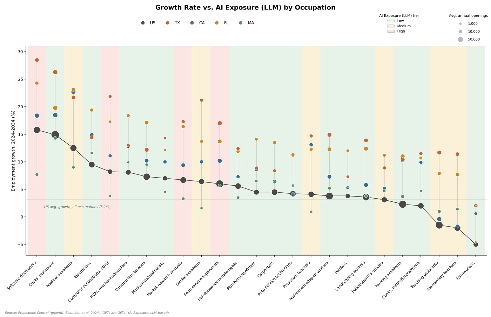
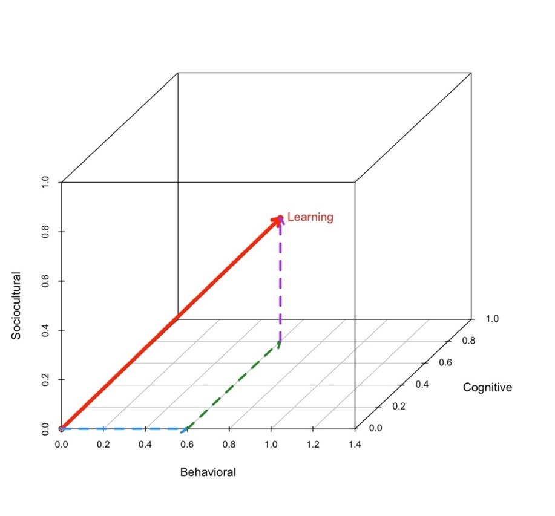
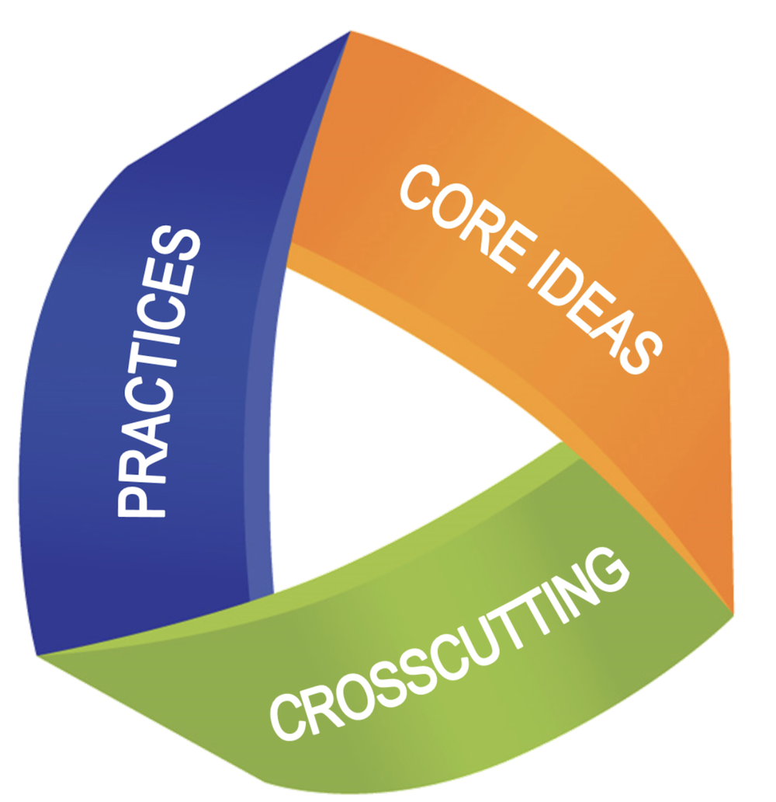
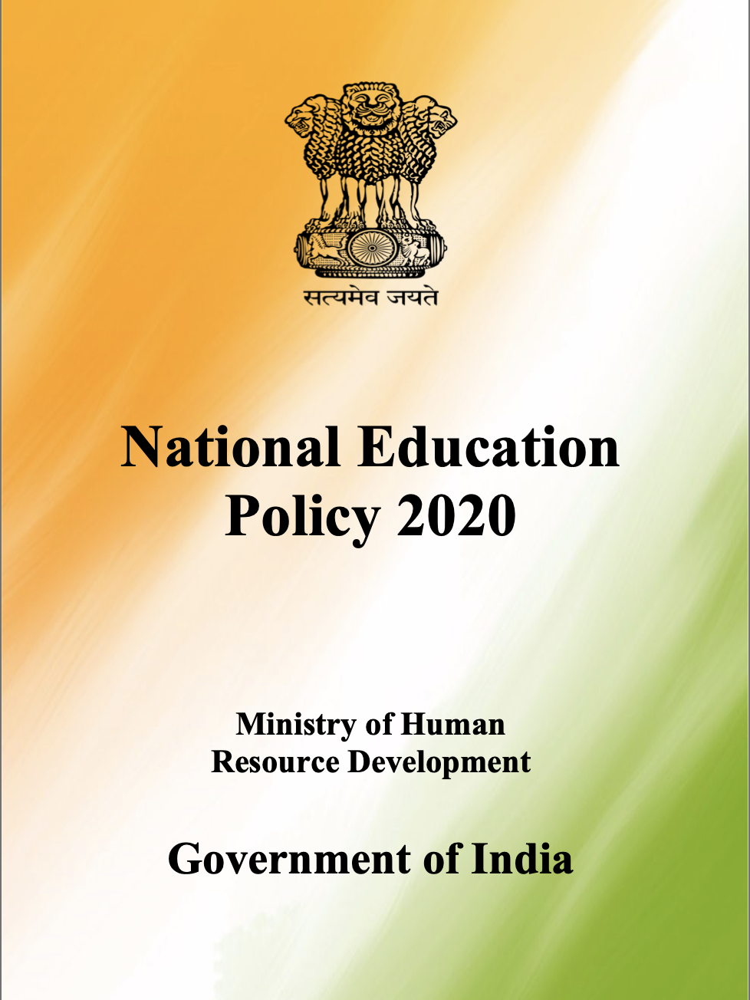

Latest

Opportunity to Grow, Incentive to Pursue: Future of U.S. Vocational-Technical Jobs in the Age of AI
Vocational-technical trades, from electricians to medical assistants, make up a small share of U.S. occupations but a disproportionate share of jobs and job growth. This white paper finds that AI is far less likely to displace these trades than white collar work, and the advantage holds across states and credential levels.
View Draft →
Reimagining Learning as a 3-Dimensional Vector: Integrating Behaviorism, Cognitivism, and Social Constructivism
This conceptual paper introduces the 3-dimensional learning vector, a model that treats learning as a vector combining behavioral, cognitive, and sociocultural dimensions rather than three separate theories. It shows how everyday teaching methods already move across all three dimensions at once.
View Paper →
Teacher Perception and Practices of the Next Generation Science Standards (NGSS): Insights from a New England Study
Based on interviews with ten secondary science teachers, this study finds wide variation in how teachers understand and use two core NGSS dimensions, Science and Engineering Practices and Crosscutting Concepts. The latter is often treated as an afterthought rather than an explicit teaching goal.
View Paper →
Purpose and Paradox in India's National Education Policy 2020: The Catch-22s of Learning Reform
India's National Education Policy 2020 promises transformative reform but contains built in tensions: between technical training and holistic growth, local language and global readiness, and flexible versus standardized assessment.
View Paper →Research
Teaching
-
Teaching Assistant, Scope and Methods (POLS UN3720)GSAS, Columbia University · Summer 2026 · Syllabus
-
Teaching Assistant, Rationalizing the World: American Social Science (POLS 4280)GSAS, Columbia University · Spring 2026 · Syllabus
-
Teaching Assistant, Introduction to Quantitative Analysis I for Political Science (POLS GU4710)GSAS, Columbia University · Fall 2025 · Syllabus
-
Turnaround Physics TeachingExcel High School, Boston · 2022–2023
-
Teaching Assistant, Physics DepartmentUniversity of Maine · 2021
-
Teaching Assistant, Math DepartmentUniversity of Maine · 2019–2020